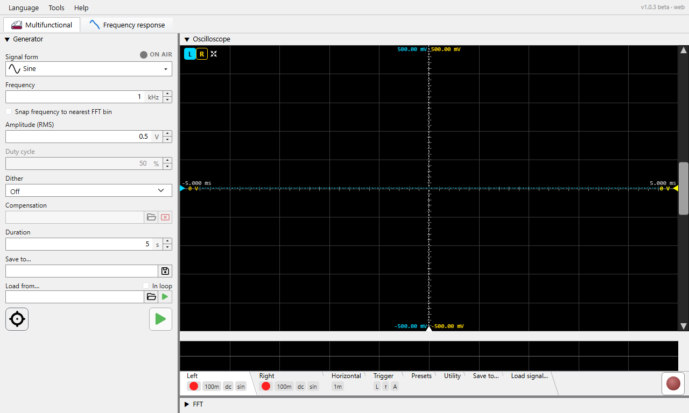

Precision audio measurement workbench: signal generator, oscilloscope, FFT analyser.
Press F1 anywhere in the application to open this help. Press Ctrl+F1 to jump directly to the section covering the control that currently has focus.
🌐 This build runs on Chromium browsers only - Google Chrome, Microsoft Edge, Opera or Brave. On any other browser it does not start. What else differs in a browser - no bit depth, the rate set in Windows, WebUSB for the QA40x, the page a bench serves - is collected in Phonalyser in a browser.
🚀 World's shortest HOW-TO - the entire parts-per-billion THD measurement, calibration to result, on one screen. Start here.
🔍 Index & search - search the whole manual, or browse the A-Z list of topics and terms.
💡 Tips - small things that make a big difference, also shown one at a time at startup.
❓ FAQ - frequently asked questions: symptoms, causes and remedies from the field, with its own search.
🙏 Credits & acknowledgements - inspiration and thanks.
📜 What's new - the full release history.

The main window is split into a Generator pane on the left (its width is adjustable - drag the sash, or set it in Preferences) and a vertical sash between Oscilloscope (top) and FFT analyser (bottom) on the right. Each pane can be collapsed to its title strip by double-clicking the title bar; double-clicking again restores it.
Each module has its own toolbar - a settings-tab strip below the main view with tabs for the per-module settings. The tab strip can be collapsed in turn (double-click the strip) to reclaim vertical space for the visible chart.
V/div,
t/div, FFT length have small up/down
arrows. The mouse wheel scrolls through standard values
(1-2-5-10) and a manual typed value is accepted when it makes
sense for the field.Help -> About Phonalyser.web shows the version and links to the project repository. Use Help -> Report a problem to file an issue on GitHub.